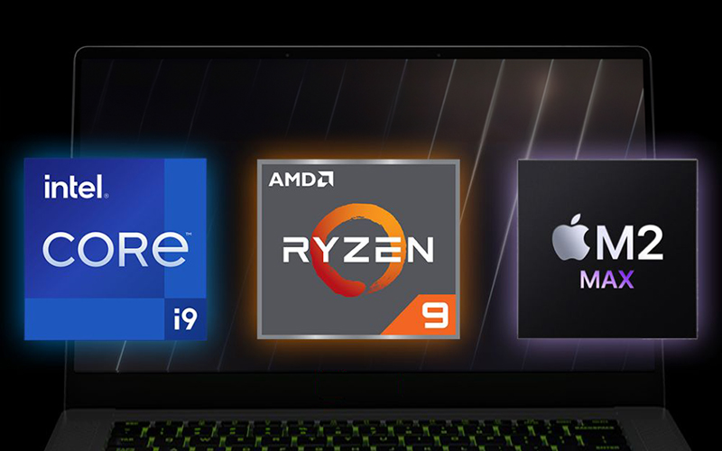

Procesadores Modernos
Los procesadores modernos han evolucionado significativamente en términos de rendimiento y eficiencia. Incorporan múltiples núcleos y hilos para manejar varias tareas al mismo tiempo, mejorando la multitarea y el procesamiento paralelo. Estos procesadores también cuentan con una mayor velocidad de reloj (medida en GHz), lo que les permite ejecutar más instrucciones por segundo. Además, la arquitectura de los procesadores modernos, como la x86 de Intel o la ARM de Apple, permite optimizar el rendimiento y reducir el consumo energético. Los procesadores de múltiples núcleos son comunes en computadoras de escritorio, portátiles y dispositivos móviles, lo que aumenta su capacidad para ejecutar aplicaciones complejas como juegos, edición de video y simulaciones científicas. Además, se integra una memoria caché avanzada para mejorar la velocidad de acceso a los datos más utilizados. Los avances en la fabricación de chips y la integración de tecnologías como IA y gráficos dedicados en el mismo procesador han hecho que los procesadores modernos sean más potentes, eficientes y versátiles.
